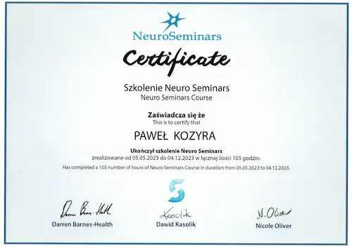
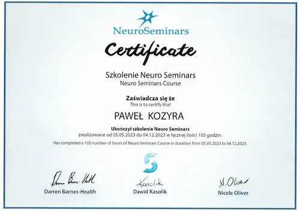

Jak mogę Ci pomóc
Jeśli masz wrażenie, że „próbowałeś już wszystkiego”, a problem nadal wraca – to miejsce może być dla Ciebie.
Z jakimi problemami pracuję?
👉 Najczęstsze powody zgłoszeń:
- ból kręgosłupa, który nawraca mimo ćwiczeń lub zabiegów
- ból barku, kolana, biodra „bez jasnej przyczyny”
- napięcia, sztywność, uczucie niestabilności
- drętwienia, mrowienia, uczucie „braku kontroli” nad ciałem
- problemy z układem nerwowym (np. neuropatie)
- urazy sportowe
- zawroty głowy, zaburzenia równowagi
- brak efektów po wcześniejszej rehabilitacji
Dlaczego ból często wraca?
Wiele terapii skupia się na miejscu, które boli. Tymczasem bardzo często przyczyna problemu znajduje się gdzie indziej.
Ciało działa jako całość, a nadrzędną rolę pełni układ nerwowy. Jeśli nieprawidłowo interpretuje on bodźce lub chroni ciało przed ruchem, ból może utrzymywać się mimo „rozluźniania” czy wzmacniania.
👉 Dlatego w mojej pracy:
- nie zaczynam od schematu,
- nie pracuję „na ślepo”,
- szukam przyczyny, a nie tylko miejsca objawu.
Jak wygląda terapia?
Każda wizyta jest indywidualna, ale proces zawsze opiera się na kilku etapach:
- Dokładny wywiad i obserwacja ruchu
- Testy funkcjonalne i neurologiczne – sprawdzające, jak ciało reaguje
- Terapia dobrana do reakcji organizmu, nie do nazwy schorzenia
- Weryfikacja efektu – sprawdzamy, co się zmieniło
- Plan dalszego postępowania – terapia, ćwiczenia lub przerwa
Metody, z których korzystam
W pracy wykorzystuję różne metody, m.in.:
- P-DTR
- elementy neurologii funkcjonalnej
- DNS
- PNF
- terapię tkanek miękkich
- MTG
Nie są one celem samym w sobie. Są narzędziami, które dobieram w zależności od tego, jak reaguje Twój organizm.
Kliknij, aby przeczytać więcej o stosowanych przeze mnie metodach.Dla kogo ta terapia nie jest
Ta forma pracy nie będzie odpowiednia, jeśli:
- szukasz wyłącznie masażu „na rozluźnienie”
- oczekujesz natychmiastowego efektu bez procesu
- nie chcesz współpracować i obserwować reakcji swojego ciała
Jeśli jednak chcesz zrozumieć swój problem i realnie nad nim pracować – jesteś w dobrym miejscu.
Poznaj mnie
mgr Paweł Kozyra 🌟 Fizjoterapeuta 🌟
Kliknij zdjęcie, aby dowiedzieć się więcej →

metody
Każdą metodę dobieram indywidualnie do Twojego problemu, aby przywrócić pełną sprawność.
P-DTR
Metoda terapeutyczna opracowana przez dr José Palomara, która łączy neurofizjologię z terapią manualną. Jest to system pracy z ciałem i układem nerwowym, który skupia się na wykrywaniu i usuwaniu blokad nerwowych i napięć mięśniowych, które mogą prowadzić do różnych dolegliwości bólowych oraz ograniczeń w funkcjonowaniu ciała.
👉 Zastosowanie:
- bóle mięśniowo-szkieletowe, takie jak bóle pleców, szyi, stawów
- zawroty głowy i problemy z równowagą
- problemy z postawą ciała
- przewlekłe bóle głowy (np. migreny)
- zaburzenia ruchomości stawów (np. ograniczenia w stawach biodrowych, kolanowych)
- problemy z układem nerwowym (np. neuropatie)
- urazy sportowe
👉 Korzyści:
- poprawa funkcjonowania układu mięśniowo-szkieletowego
- zmniejszenie dolegliwości bólowych, w tym bólu przewlekłego
- poprawa zakresu ruchu i mobilności
- redukcja stresu i napięcia w ciele
- szybsza regeneracja po urazach
NeuroSeminars
Neurologia funkcjonalna to podejście do diagnozy i terapii, które koncentruje się na funkcjonowaniu układu nerwowego, szczególnie w kontekście interakcji między mózgiem i innymi układami ciała. Zamiast skupiać się jedynie na strukturalnych uszkodzeniach, jak w tradycyjnej neurologii, neurologia funkcjonalna bada zaburzenia funkcji, które mogą być odpowiedzialne za objawy pacjenta. Wykorzystuje ona zaawansowane testy neurologiczne, które mogą obejmować badanie ruchu gałek ocznych, równowagi, napięcia mięśniowego czy reakcji odruchowych. Na podstawie tych wyników stosuje się techniki terapeutyczne, takie jak:
- ćwiczenia stymulujące określone obszary mózgu
- manipulacje i terapię manualną
- terapie sensoryczne i trening równowagi
👉 Zastosowanie:
| Problem | Diagnoza / Przyczyna | Cel terapii |
|---|---|---|
| Zawroty głowy, zaburzenia równowagi | Łagodny napadowy zawrót głowy (BPPV), zawroty szyjnopochodne, zaburzenia przedsionkowe. | Problemy pochodzące z układu przedsionkowego lub ocznych. |
| Zaburzenia bólowe | Leczenie przewlekłego bólu, w tym migreny, bólu neuropatycznego, bólu spowodowanego zaburzeniami napięcia mięśniowego. | Poprawa mechanizmów modulacji bólu w układzie nerwowym, w kontekście nadwrażliwości na bodźce (np. allodynia). |
| Choroby neurologiczne | Choroba Parkinsona, stwardnienie rozsiane (SM), udar mózgu. | |
| Problemy rozwojowe u dzieci | ADHD, autyzm, dysleksja, opóźnienia w rozwoju motorycznym. | Ćwiczenia wspierające integrację sensoryczną i koordynację. |
| Rehabilitacja pourazowa | Wstrząśnienie mózgu, urazy rdzenia kręgowego, inne urazy neurologiczne. | Terapie dostosowane do przywracania równowagi i zmniejszania dysfunkcji ruchowych. |
| Stany lękowe i depresja | Regulacja autonomicznego układu nerwowego w celu zmniejszenia nadmiernej aktywacji układu współczulnego, co sprzyja redukcji objawów lęku i poprawia jakość snu. | |
| Brak poprawy podczas fizjoterapii | Zaburzenia integracji informacji sensorycznych i kontroli motorycznej. | |
| Zaburzenia pracy stawów skroniowo-żuchwowych (TMJ) | ||
DNS
DNS (Dynamic Neuromuscular Stabilization) – to innowacyjna metoda fizjoterapeutyczna, która skupia się na przywracaniu prawidłowej stabilizacji i kontroli nerwowo-mięśniowej ciała. Jej podstawą jest zrozumienie, jak nasze ciało rozwijało się w dzieciństwie i jak te wzorce ruchowe wpływają na funkcjonowanie dorosłego człowieka.
🔹 Co wyróżnia DNS?
Bazuje na naturalnych wzorcach ruchowych niemowląt – każdy ruch, który wykonuje dziecko, jest zaprogramowany tak, by rozwijać stabilność i mobilność. Koryguje nieprawidłowe wzorce ruchowe powstałe np. po urazach, przeciążeniach czy siedzącym trybie życia. Poprawia stabilność kręgosłupa, postawę i efektywność ruchu, co zmniejsza ryzyko kontuzji.
👉 Zastosowanie:
- redukcja dolegliwości bólowych kręgosłupa i stawów
- poprawa postawy i stabilizacji ciała
- poprawa wydajności i zapobieganie kontuzjom u sportowców
- korekcja nieprawidłowych wzorców ruchowych po urazach
- poprawa mobilności i kontroli nerwowo-mięśniowej
👉 Korzyści:
- lepsza kontrola i świadomość własnego ciała
- zmniejszenie dolegliwości bólowych
- poprawa stabilności, mobilności i jakości codziennych ruchów
PNF
PNF (Proprioceptive Neuromuscular Facilitation), czyli Proprioceptywna Nerwowo-mięśniowa Facilitacja/ torowanie ruchu to metoda, której celem jest poprawa zakresu ruchu, siły mięśniowej, koordynacji ruchowej, zaburzonych wzorców ruchowych oraz powrót do samodzielnego funkcjonowania. Została opracowana w latach 40. XX wieku przez amerykańskiego lekarza, dr Hermanna Kabata, i jego współpracowników. Bazuje na stymulacji układu nerwowego i mięśniowego za pomocą naturalnych wzorców ruchowych, które angażują wiele grup mięśniowych jednocześnie. Metoda wykorzystuje propriocepcję, kontakt dotykowy i komendy werbalne, aby pomóc pacjentowi w przywracaniu prawidłowych funkcji ruchowych.
👉 Zastosowanie:
| Neurologia | udar mózgu, stwardnienie rozsiane (SM), choroba Parkinsona, uszkodzenie rdzenia kręgowego |
|---|---|
| Ortopedia | złamania, skręcenia, zwichnięcia, dolegliwości bólowe, przeciążenia, wady postawy, rehabilitacja pooperacyjna |
| Sport | poprawa elastyczności tkanek, koordynacji, siły, szybkości, zakresu ruchomości, równowagi |
👉 Korzyści:
- zwiększenie siły mięśniowej
- przywracanie funkcji ruchowych
- poprawa koordynacji i równowagi
- poprawa zakresu ruchu i elastyczności
- redukcja bólu i napięcia mięśniowego
- wzmacnianie propriocepcji
MTG
MTG, czyli Masaż Tkanek Głębokich, to specjalistyczna metoda masażu, która skupia się na pracy z głębszymi warstwami mięśni, powięzi oraz tkanek łącznych. Jest szczególnie skuteczna w łagodzeniu przewlekłych napięć, redukcji bólu oraz poprawie ruchomości stawów. Ta technika jest polecana osobom zmagającym się z wszelkimi bólami (egzystencjalny też się liczy) czy ograniczeniami w zakresie ruchu.
👉 Zastosowanie:
- bóle pleców, napięciowe bóle głowy, bóle karku, barków i ramion, bóle kończyn dolnych
- napięciowe dysfunkcje mięśniowo-powięziowe (siedzący tryb życia, nieprawidłowa postawa ciała, przeciążenia mięśniowe, praca w statycznych pozycjach, np. przy komputerze)
- urazy mięśni i stawów, operacje (np. blizny, zrosty), skręcenia i nadwyrężenia, stany zapalne tkanek miękkich (np. zapalenie ścięgna Achillesa)
- przygotowanie i regeneracja u sportowców (poprawa elastyczności mięśni, wspomaganie regeneracji po intensywnym wysiłku, zmniejszenie ryzyka kontuzji, przywracanie równowagi napięć mięśniowych)
- zwiększenie ruchomości stawów, poprawa sprawności fizycznej
- stany chronicznego stresu, zaburzenia snu
👉 Korzyści:
- Redukcja przewlekłego bólu mięśni i stawów
- Leczenie napięciowych dysfunkcji mięśniowo-powięziowych
- Rehabilitacja po urazach i kontuzjach
- Zwiększenie zakresu ruchu
- Redukcja stresu i napięcia psychicznego
- Praca z bliznami i zrostami
Inne
- Ćwiczenia
- Masaż
- Terapia tkanek miękkich
kursy
Każde szkolenie potwierdza wiedzę i kompetencje, które wykorzystuję w pracy z pacjentami.
Kliknij zdjęcie, aby powiększyć →
 



opinie
Pomogłem wielu pacjentom — przeczytaj ich opinie i przekonaj się sam.
Więcej recenzji znajdziesz na moim profilu na Facebooku.
cennik
Jedna jakość terapii — wybierz wygodną formę wizyty.
W gabinecie
200zł Dom Studencki T-22 ul. Wróblewskiego 25, 51-657 Wrocław
Otrzymujesz:
- 🔍 Dokładną konsultację i analizę problemu
- 🎯 Indywidualnie dobraną terapię
- 🏠 Ćwiczenia do samodzielnej pracy w domu
- 🛡️ Porady, jak zapobiegać nawrotom bólu
- 💬 Jasne wyjaśnienie planu terapii
W miejscu wezwania
200zł + koszt dojazdu (ustalany indywidualnie)
Otrzymujesz:
- 🔍 Dokładną konsultację i analizę problemu
- 🎯 Indywidualnie dobraną terapię
- 🏠 Ćwiczenia do samodzielnej pracy w domu
- 🛡️ Porady, jak zapobiegać nawrotom bólu
- 💬 Jasne wyjaśnienie planu terapii
kontakt
Masz pytania? Napisz lub zadzwoń
Dojeżdżam do domu pacjenta
Przyjmuję w gabinecie
Dom Studencki T-22 ul. Wróblewskiego 25, 51-657 Wrocław